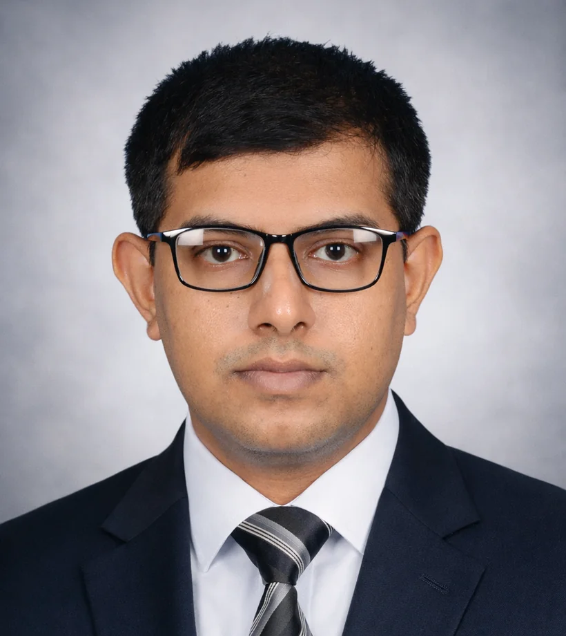

Associate Professor
EECE Department, MIST

Associate Professor of Electrical, Electronic and Communication Engineering at the Military Institute of Science and Technology, and founding director of the INSIA Lab. His research is on time–frequency analysis and non-stationary signal processing for radar, biomedical and seismic signals.
EECE Department, MIST
EECE Department, MIST
EECE Department, MIST
SenSigI Lab, Dept. of Electronics Engineering, DIAT, Pune, India. Supervisor: Dr. R. R. Sharma
RUET, Rajshahi. Supervisor: Dr. Zahurul Islam Sarkar
Rajshahi University of Engineering & Technology (RUET)